AF
AF
Aksa Fathima
Hi,
I am a Project Associate II at the BEES Lab within the Department of Electronic Systems Engineering (DESE) at the Indian Institute of Science (IISc), supervised by Prof. Hardik J. Pandya. Prior to this, I earned my M.Sc. in Nanoscience and Technology from the JSS Academy of Higher Education and Research (JSSAHER).
My research focuses on the design of transducers, surface engineering, electrical and material characterisation, and clinical validation of advanced biosensing technologies for translational point-of-care diagnostics.
Additionally, I have gained valuable experience in micro- and nanofabrication and material characterisation across premier cleanroom facilities at IISc, including the BEES Lab NanoFab, the National Nano Fabrication Centre (NNFC), and the Micro Nano Characterization Facility (MNCF). I am also currently collaborating with MSMF, JSS Medical College and Hospital, and Narayana Health for the clinical validation of this biosensing technology.
Research Interests
My broader interests lie at the intersection of nanoscience, surface chemistry, and micro- and nano-device engineering to develop next-generation diagnostic platforms for healthcare applications.
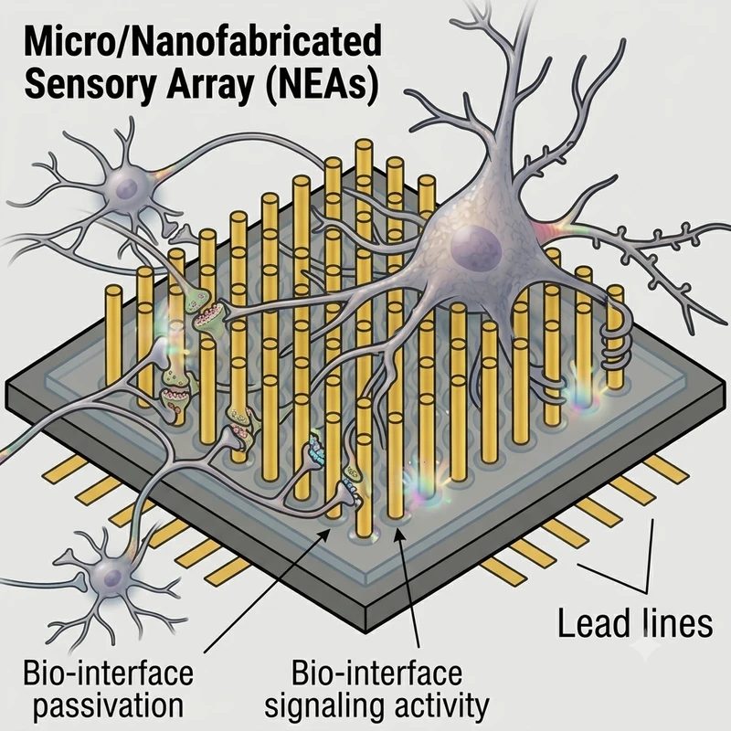
Micro/nanofabricated Sensor Arrays
I am driven to advance scalable 3D nanoelectrode arrays (NEAs) for high-fidelity intracellular signal acquisition and live-cell biophysics. Driven to explore advanced techniques like area-selective atomic layer deposition (AS-ALD) to optimize signal-to-noise ratios and long-term bio-interface stability, I aim to build upon my foundation in nanofabrication, surface functionalization, and impedance analytics (EIS). My goal is to apply these high-density bio-electronic platforms toward decoding electrophysiological dynamics in neural and cardiac cellular models for real-time disease profiling.
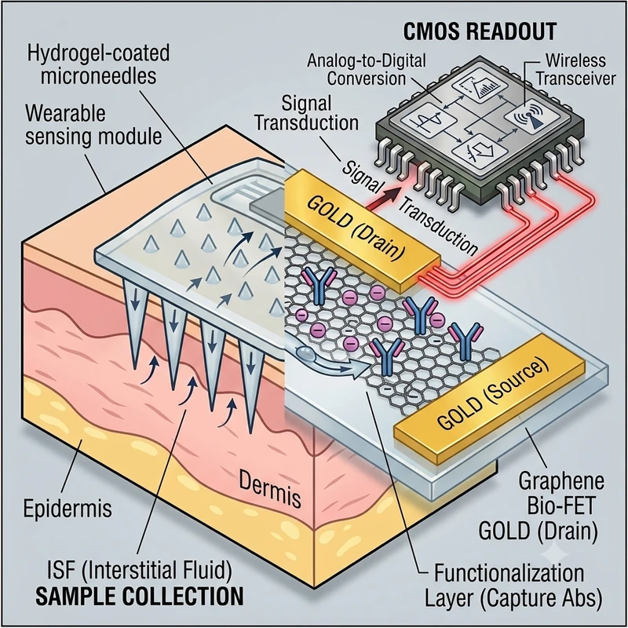
Wearable Biosensors & Integrated Bio-FET Platforms
I aim to explore integrated wearable platforms for continuous transdermal monitoring, combining microneedle arrays for minimally invasive sample collection with graphene Bio-FETs for real-time, label-free sensing. Leveraging my core background in surface functionalization and micro/nanofabrication, my goal is to bridge transdermal biofluid extraction with wireless point-of-care diagnostics and advance theranostic closed-loop systems for responsive therapeutic release.
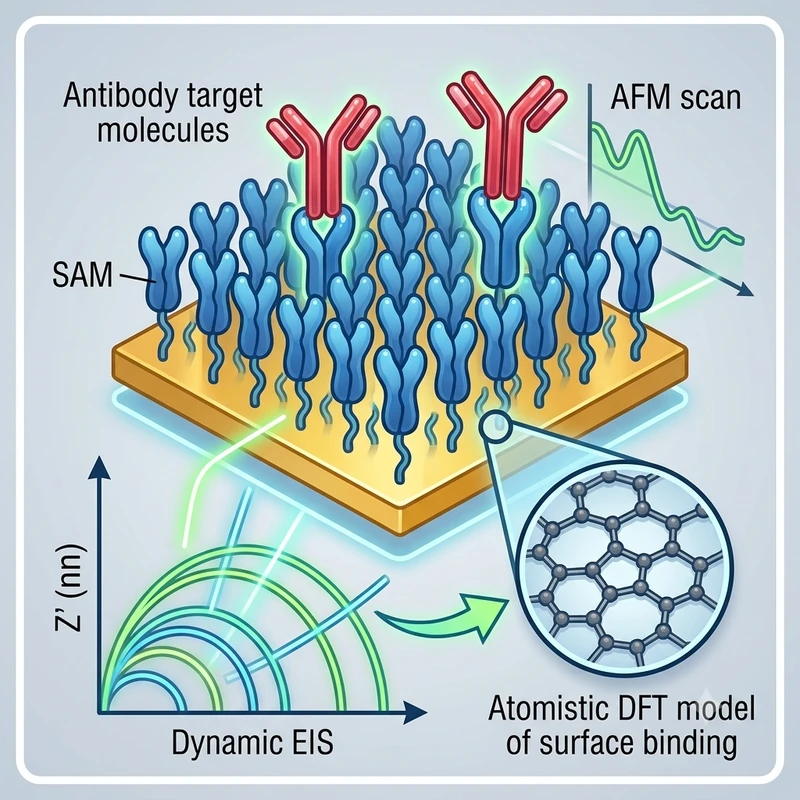
Bio-interface Engineering and Surface Analytics
I aim to design and characterize bio-nano interfaces to optimize target capture and signal transduction across diverse sensing platforms. Advancing beyond traditional drop-casting methods, I seek to combine Atomic Layer Deposition (ALD)-based surface engineering with Density Functional Theory (DFT) modelling and controlled surface functionalization (SAMs and bioconjugation) to investigate interfacial charge transfer. Integrating these theoretical insights with Electrochemical Impedance Spectroscopy (EIS), my goal is to drive rational bio-interface design for high-sensitivity diagnostic devices.
News
| Jan 2026 | Our paper Impedance Profiling of Lymph Nodes: A Biomarker for Oral Cancer Metastasis is published in Microchemical Journal (Elsevier). |
| Oct 2025 | Indian Patent No. 572340, A Multiplexed Electrochemical Sensor, is granted. |
Selected Publications
-
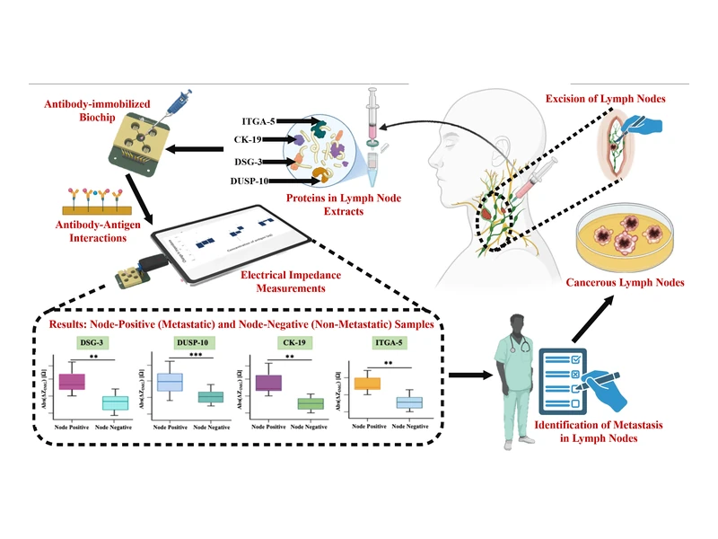
Microchem. J.Impedance Profiling of Lymph Nodes: A Biomarker for Oral Cancer MetastasisTwinkle, H. Madhumathi, Aksa Fathima, Anil Vishnu, Amritha Suresh, Manjula Das, Hardik J. PandyaMicrochemical Journal (Elsevier), 227, 118842, 2026 -
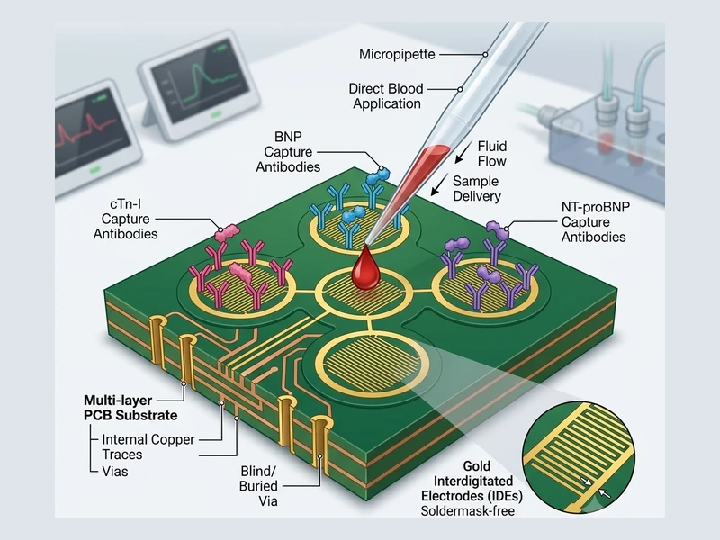
ICCHDCMTowards Early Diagnosis of Congestive Heart Failure using Multiplexed ImmunosensorAksa Fathima, Twinkle, Varun, Hardik J. Pandya*International Conference on Cardiology, Heart Disease and Cardiovascular Medicine (ICCHDCM), Vienna, Italy, Oct 2025 · * PresenterBest Oral Presentation Award
Projects
-
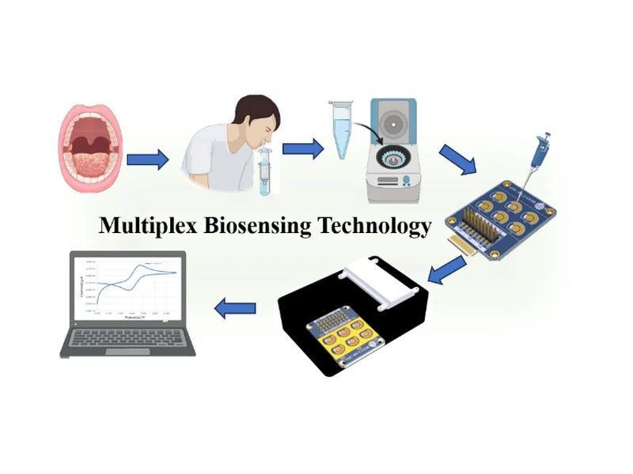
In prep.Multiplexed Electrochemical Biosensor for Non-invasive Screening and Risk Stratification of Oral Squamous Cell Carcinoma (OSCC)Manuscript under preparation · with Mazumdar Shaw Medical Foundation (MSMF) -
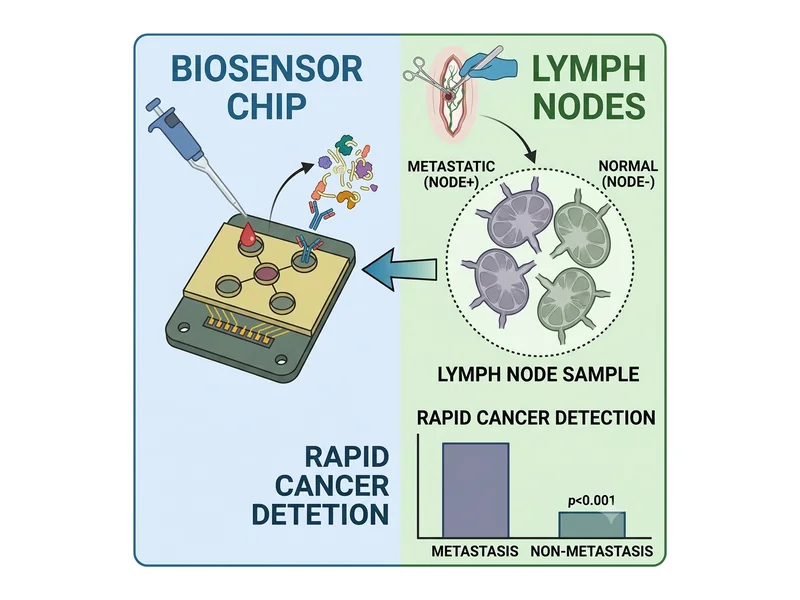
Microchem. J.Impedance Profiling of Lymph Nodes: A Biomarker for Oral Cancer Metastasis2026, Microchemical Journal · with MSMF and Narayana Health -
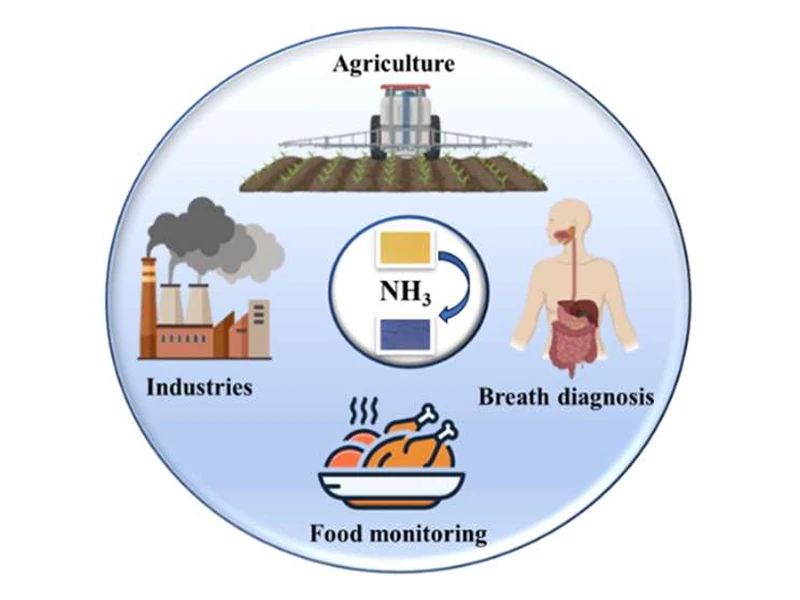
IWPSD '25Dye-Integrated Electrospun Nanofiber Sensors for Visual Detection of Ammonia: A Portable and Low-Cost Approach Using PCL-BPB/BCG Composites2025, IWPSD-2025, IIT Roorkee · Poster -
ICCHDCM '25
Towards Early Diagnosis of Congestive Heart Failure using Multiplexed Immunosensor2025, ICCHDCM, Vienna, Italy · Best Oral Presentation Award
M.Sc. Thesis
-
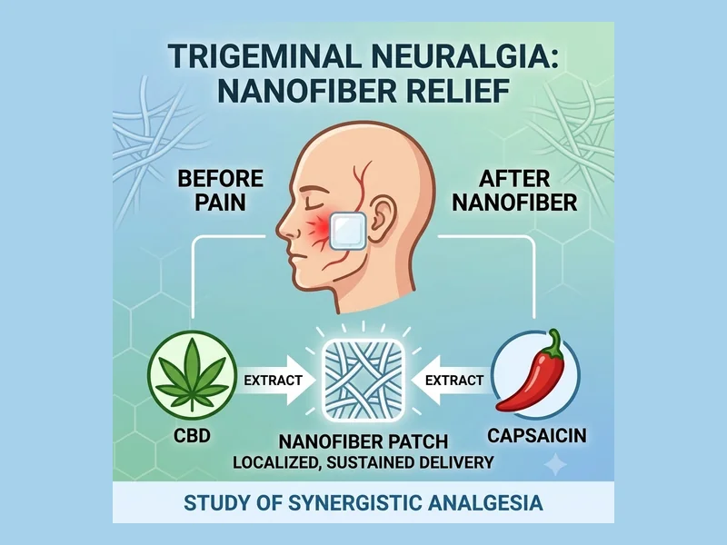
M.Sc.Nanofibers Patch for Transdermal Drug Delivery of Capsaicin and CBD for Trigeminal Neuralgia Pain Management2022, M.Sc. dissertation · JSS Academy of Higher Education and Research
Multiplexed Electrochemical Biosensor for Non-invasive Screening and Risk Stratification of Oral Squamous Cell Carcinoma (OSCC)
Oral squamous cell carcinoma (OSCC) remains a major global health challenge, with high mortality largely driven by delayed diagnosis. Approximately 80% of oral cancers originate from oral potentially malignant disorders (OPMDs). While tissue biopsy is the diagnostic gold standard, it is invasive, costly, and limited by poor patient compliance and localised sampling errors. Conversely, visual-oral examinations lack the specificity required to reliably distinguish dysplastic lesions from benign inflammatory conditions.
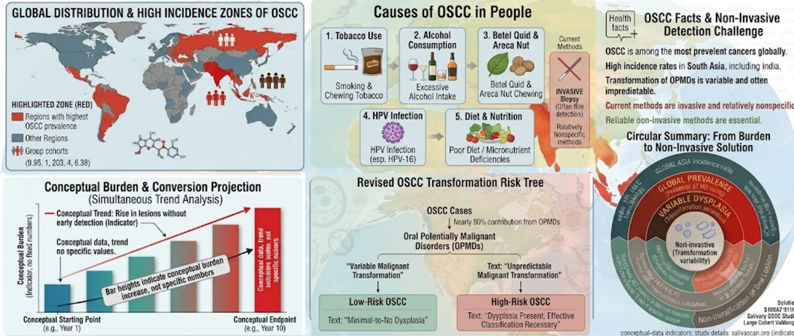
To overcome these limitations, non-invasive saliva-based diagnostics present a promising alternative. However, conventional salivary biomarker assays often struggle to differentiate OPMDs and OSCC from common inflammatory conditions such as gingivitis and periodontitis. To address this, our work focuses on validating high-confidence salivary protein biomarkers, specifically S100A7 and S100P, which are heavily implicated in tumour progression and inflammation.
To achieve superior diagnostic precision, we couple these biomarker discoveries with advanced transducer technologies. By integrating traditional biochemical gold standards such as ELISA along with multiplexed electrochemical biosensors, we can significantly improve analytical performance and cross-validation. This synergistic approach overcomes conventional signal-to-noise limitations, lowers detection limits, and provides robust quantitative validation in complex clinical biofluids and in remote settings.
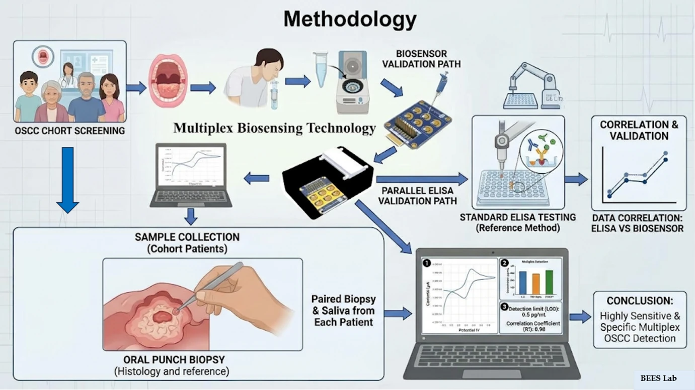
To validate system robustness, the multiplexed biosensor was tested on a clinical cohort of N = 145 samples across benign, OPMD, and OSCC groups. The results showed excellent correlation with standard tissue biopsy and ELISA benchmarks, highlighting the platform's analytical accuracy and diagnostic potential.
A manuscript detailing this work is currently under preparation.
Impedance Profiling of Lymph Nodes: A Biomarker for Oral Cancer Metastasis
The most common type of oral cancer is oral squamous cell carcinoma (OSCC), with an average 5-year survival rate of 64.4–79.3%. Lymph node metastasis (LNM) serves as a critical prognostic determinant for patients suffering from OSCC, where a substantial proportion of individuals unfortunately present at an advanced disease stage with compromised survival outcomes. Also, due to challenges with the accurate detection of pathologically positive nodes, patients with clinically negative nodes frequently need surgical neck resection or radiation, resulting in morbidity and a detrimental impact on quality of life.
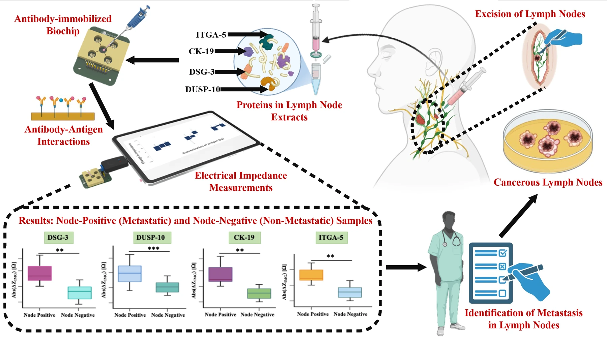
To overcome this clinical challenge, our recent study introduces a cutting-edge, portable biosensing platform comprising a multiplexed biochip and an impedance analyser to detect nodal metastasis in OSCC.
By utilizing targeted protein lysates and a biomarker panel comprising CK19, DUSP10, ITGA5, and DSG3, the biosensing platform demonstrates promising potential as a sensitive, accessible point-of-care technology that uses electrical impedance to detect metastasis in lymph nodes. The foundation of this biosensing approach relies on its surface chemistry with interdigitated electrodes (IDEs) functionalized via maleimide-based chemistry to securely immobilize the targeted reduced antibodies for optimal biorecognition.
The biochip demonstrated exceptional analytical performance, outperforming standard ELISA workflows by detecting statistically significant impedance changes across patient samples and achieving remarkable diagnostic accuracy, with AUC values ranging from 0.8776 to 0.9375. By merging the versatility of printed circuit boards with portable impedance readout, this point-of-care technology paves the way for rapid, decentralized, and cost-effective oncological screening.
Dye-Integrated Electrospun Nanofiber Sensors for Visual Detection of Ammonia: A Portable and Low-Cost Approach Using PCL-BPB/BCG Composites
Ammonia (NH₃) is a vital chemical precursor widely utilized across agriculture, food processing, textiles, and heavy industries, with global production exceeding hundreds of millions of metric tons. However, due to its high volatility and toxicity, accidental leaks or prolonged occupational exposure pose severe environmental and health risks. Low-level exposure (50–100 ppm) causes acute irritation to the eyes, nose, and throat, while concentrations exceeding 300 ppm present an immediate danger to human life. Furthermore, catastrophic incidents, such as the massive 2020 ammonium nitrate explosion in Beirut, underscore the critical need for rapid, reliable, and early-warning detection systems.
Additionally, ammonia, a volatile organic compound (VOC) present in exhaled human breath, serves as a crucial non-invasive biomarker for systemic metabolic dysfunctions, such as liver cirrhosis, renal failure, and gastrointestinal disorders. Conventional analytical techniques for breath testing (like gas chromatography-mass spectrometry) offer high precision but require bulky laboratory infrastructure, expensive equipment, and specialized personnel, rendering them impractical for point-of-care diagnostics. This work introduces a portable, low-cost colorimetric sensing platform designed for rapid, real-time breath analysis, combining electrospun nanofiber sensor arrays with an embedded microcontroller unit and cloud-linked analytics to enable accessible, on-site non-invasive screening.
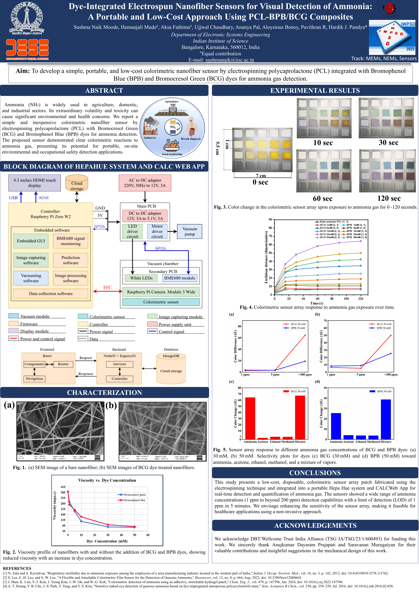
Towards Early Diagnosis of Congestive Heart Failure using Multiplexed Immunosensor
Best Oral Presentation AwardHeart failure is defined as a clinical condition with signs or symptoms attributable to anatomic or functional cardiac abnormalities, validated by elevated natriuretic peptide levels and objective evidence of pulmonary or systemic congestion. Heart failures are primarily classified into two types:
- Acute Heart Failure: a sudden, life-threatening condition in which the heart is unable to deliver adequate oxygen.
- Congestive Heart Failure (CHF): a critical chronic cardiac condition involving multiple physiological phenomena that often lead to adverse repercussions and mortality.
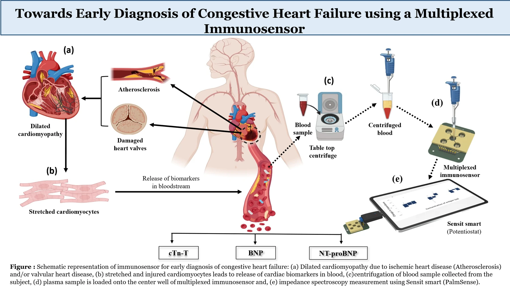
The Diagnostic Challenge & Biomarker Mechanism
Cardiac biomarkers, specifically Brain Natriuretic Peptide (BNP), N-Terminal Pro-Brain Natriuretic Peptide (NT-proBNP), and Cardiac Troponin-I (cTn-I), play prominent roles in cardiac remodelling, including left ventricular dilation, left ventricular dysfunction, and increased left ventricular mass. Adverse ventricular remodelling causes these proteins to be released from injured cardiomyocytes, eventually leading to elevated plasma levels in ambulatory CHF patients. These elevated biomarker concentrations correlate directly with the degree of heart congestion across the three distinct stages of CHF.
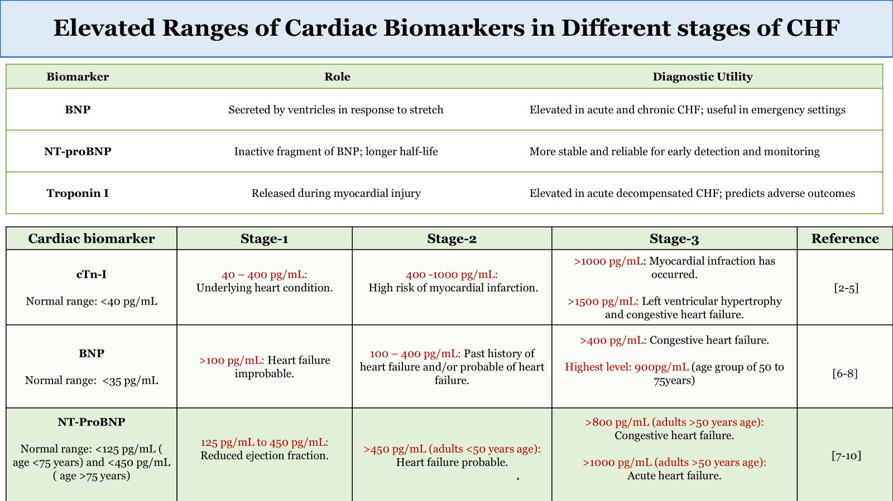
Rapid and sensitive detection of acute myocardial infarction and congestive heart failure (CHF) requires decentralized diagnostic platforms capable of multi-analyte quantification from microliter blood volumes. To address this need, an advanced electrochemical biosensor was engineered on a multi-layer printed circuit board (PCB) substrate. The modular system incorporates gold interdigitated electrodes (IDEs) featuring a finger width and spacing of five micrometers on soldermask-free sensing patches. Unlike conventional microfluidic setups, this architecture employs direct sample application via pipette onto designated sensing regions, simplifying fluid handling and reducing device complexity.
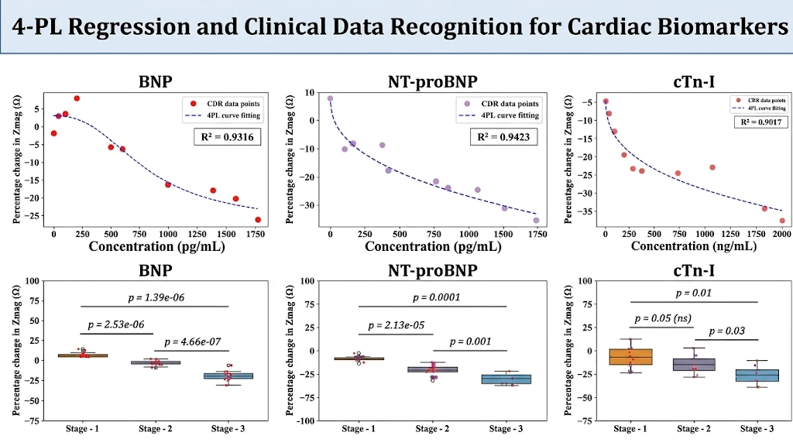
Electrochemical impedance spectroscopy was utilized to evaluate binding kinetics. Calibration curves analyzed via a 4-parameter logistic (4-PL) regression model demonstrated robust correlation coefficients (R² = 0.90–0.94). When evaluated using PBS-spiked samples, the sensor demonstrated high analytical specificity and was able to clearly delineate between the three clinical stages of heart failure based on distinct biomarker concentration ranges. Furthermore, statistical analysis across these stages yielded highly significant inter-group variance (p < 0.05 to p < 10⁻⁶), confirming that the PCB-integrated biosensor provides exceptional sensitivity and wide dynamic ranges suitable for point-of-care cardiac risk stratification.
The preliminary work was presented at the International Conference on Cardiology, Heart Disease and Cardiovascular Medicine (ICCHDCM, October 2025), Vienna, Italy.
Future Work
To further boost sensor sensitivity and specificity, this study is being extended through next-generation transducer architectures and tailored bio-interface surface engineering, followed by comprehensive clinical sample validation.
Nanofibers Patch for Transdermal Drug Delivery of Capsaicin and CBD for Trigeminal Neuralgia Pain Management
Trigeminal neuralgia is a debilitating neuropathic facial pain condition characterized by paroxysmal, shock-like agony along the branches of the trigeminal nerve, often triggered by minimal sensory stimuli. Conventional pharmacological treatments frequently result in systemic adverse effects and diminishing long-term efficacy, driving the need for targeted, non-invasive transdermal drug delivery systems. This thesis investigates a synergistic dual-analgesic formulation combining capsaicin, extracted from Capsicum assamicum (Bhoot Jolokia), and cannabidiol (CBD) derived from hemp, specifically engineered for localized pain management. Capsaicin acts as a potent agonist of transient receptor potential vanilloid 1 (TRPV1) channels, eventually desensitizing hyperactive nociceptive pathways, while CBD offers complementary anti-inflammatory and neuromodulatory relief through cannabinoid receptor interactions without psychoactive interference.
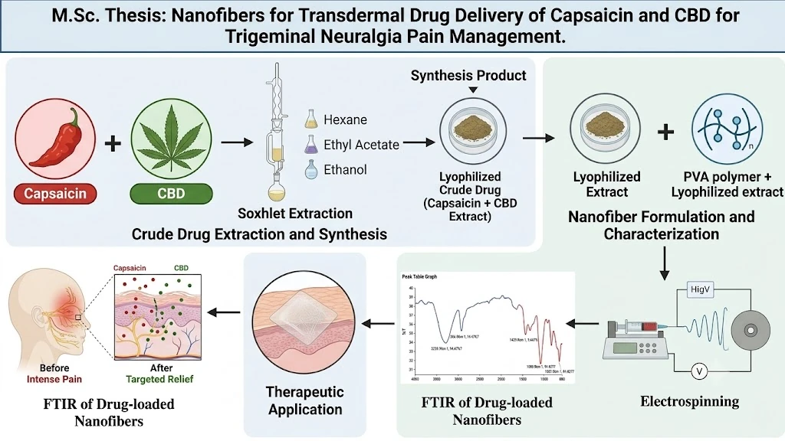
To ensure clinical viability and regulatory compliance, a rigorous Soxhlet extraction methodology utilizing selective solvents (hexane, ethyl acetate, and ethanol) was optimized to isolate the therapeutic phytoconstituents while selectively stripping out psychoactive tetrahydrocannabinol (THC) content. Phytochemical screening and UV-Vis spectrophotometric analyses confirmed that extraction parameters successfully maximized the yield of target analgesic compounds (CBD and capsaicin) while minimizing residual impurities and THC fractions. Furthermore, DPPH radical scavenging assays demonstrated significant antioxidant potential across the extracted fractions, validating their biochemical stability and therapeutic potency prior to polymer integration.
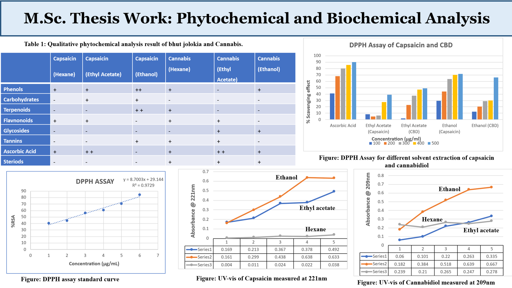
The lyophilized crude drug extract was subsequently embedded into biocompatible polyvinyl alcohol (PVA) matrices and processed via electrospinning to yield uniform, high-surface-area transdermal nanofibrous patches. In vitro drug release kinetics studies revealed a biphasic release profile characterized by an initial burst release followed by sustained, controlled diffusion over extended periods. Mathematical modeling of the release data indicated compliance with established kinetic models, confirming that the PVA nanofiber platform provides a stable, prolonged transdermal delivery vehicle capable of maintaining therapeutic localized concentrations for chronic neuropathic pain mitigation.
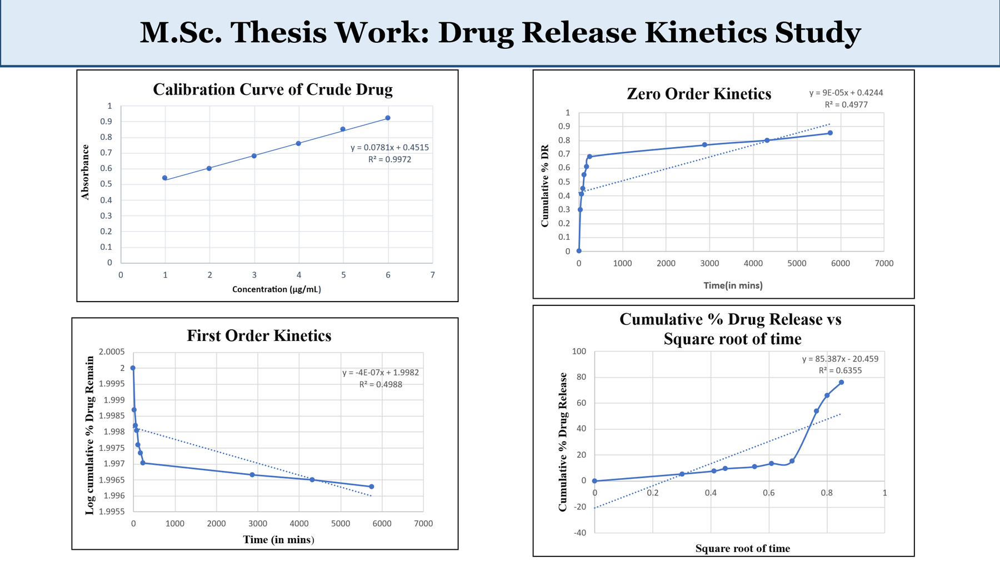
Publications & Patents
Journal articles, conference presentations, book chapters and patents.
Publications
-
Journal
Impedance Profiling of Lymph Nodes: A Biomarker for Oral Cancer MetastasisTwinkle, H. Madhumathi, Aksa Fathima, Anil Vishnu, Amritha Suresh, Manjula Das, Hardik J. PandyaElsevier Microchemical Journal, 227, p. 118842, 2026
-
Oral
Towards Early Diagnosis of Congestive Heart Failure using Multiplexed ImmunosensorAksa Fathima, Twinkle, Varun, Hardik J. Pandya*International Conference on Cardiology, Heart Disease and Cardiovascular Medicine (ICCHDCM), October 2025, Vienna, Italy · * PresenterBest Oral Presentation Award
-
Oral
Electrical Impedance as a Signature for Metastatic Lymph Node Detection in Oral CancerTwinkle, Anil Vishnu, Madhumati H, Aksa Fathima, Vijay Pillai, Manjula Das, Amritha Suresh, Hardik J. PandyaInternational Conference on Biomedical Science and Engineering (ICBSE-2025), Rome, Italy · Oral presentation
-
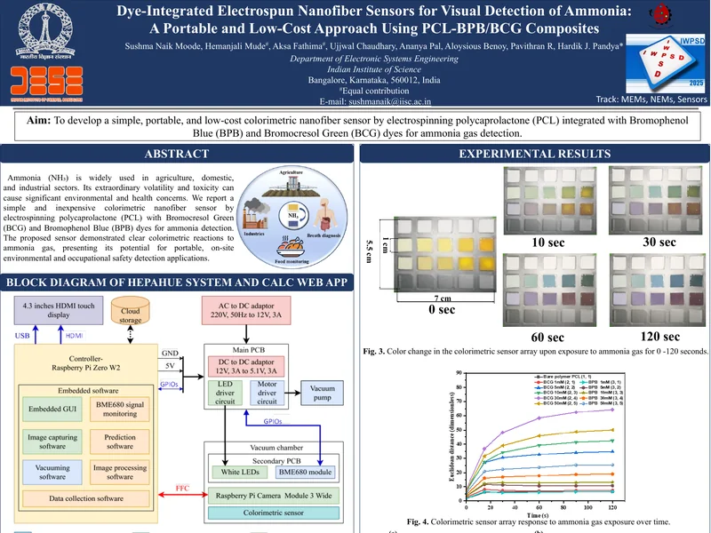
PosterDye-Integrated Electrospun Nanofiber Sensors for Visual Detection of Ammonia: A Portable and Low-Cost Approach Using PCL-BPB/BCG CompositesSushma Naik Moode, Hemanjali Mude#, Aksa Fathima#, Ujjwal Chaudhary, Ananya Pal, Aloysious Benoy, Pavithran R, Hardik J. PandyaXXII International Workshop on the Physics of Semiconductor Devices (IWPSD-2025), IIT Roorkee, Uttarakhand, India · Poster · #equal contribution -
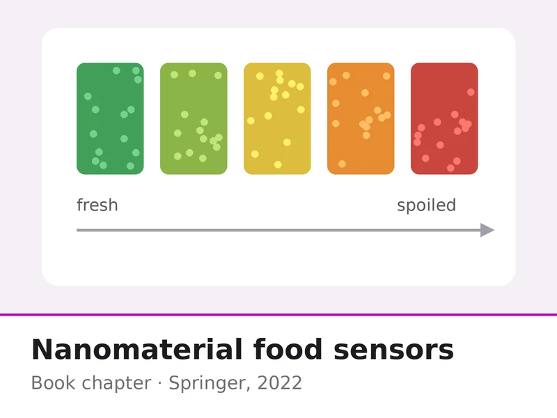
ChapterSmart Use of Nanomaterials as Sensors for Detection and Monitoring of Food SpoilageAksa Fathima et al.Application of Nanotechnology in Food Science, Processing and Packaging, Springer International Publishing, 2022
Patents
-
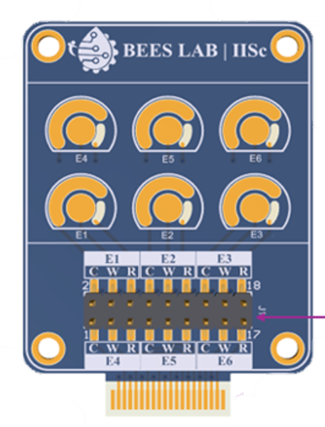
GrantedHardik J. Pandya, Anil Vishnu, Hari R. S. Ajay Krishnan, Aksa Fathima, Srividyasakti V.Indian Patent No. 572340 · Utility patentFiled 13 Dec 2023 · Granted 21 Oct 2025 · Status Granted -
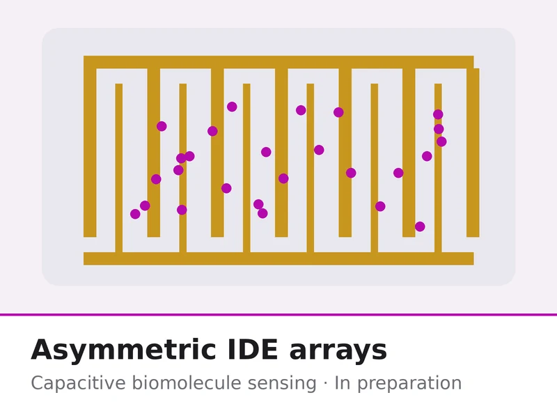
In prep.Asymmetric Interdigitated Electrode Arrays for Enhanced Capacitive Biomolecule SensingHardik J. Pandya, Aksa Fathima, Hari R. S.Design & Utility patentStatus Application in preparation
Curriculum Vitae
Download PDFProject Associate at the BEES Lab, DESE, IISc, with hands-on research experience in nano-biosensors and point-of-care diagnostic systems. Trained in biosensor design and development, micro/nanofabrication, surface engineering, materials characterization and electrical impedance spectroscopy (EIS) based characterization. Research interests include BioMEMS and nano-biosensors, novel sensing platforms, nanoscale interfaces for biomolecule detection, and dynamic EIS approaches for single-molecule and ultra-low-concentration biosensing. Seeking a doctoral research position in advanced micro/nanofabrication technologies for translational biosensing platforms.
Education
- 2020 – 2022Master of Science in Nanoscience and TechnologyJSS Academy of Higher Education and Research (JSSAHER), Deemed University, Mysore, India
CGPA 8.3/10 · Advisor: Dr. Asha Srinivasan
Thesis: PVA nanofibers for transdermal drug delivery of capsaicin and CBD for trigeminal neuralgia pain management - 2016 – 2019Bachelor's in Health Care and TechnologySt. Philomena’s Autonomous College, affiliated to the University of Mysore, India
CGPA 8.8/10, third rank in the batch. An interdisciplinary programme combining cardiac science, medical biochemistry and microbiology (majors) with a clinical internship in the cardiology department for about 2.5 years.
Work and Research Experience
- Sep 2022 – nowProject Associate II, Biomedical Research LabBEES Lab (Biomedical and Electronic 10⁻⁶–10⁻⁹ Engineering Systems Laboratory), DESE, IISc · Advisor: Prof. Hardik J. Pandya
Design, development, and validation of solutions to unmet point-of-care diagnostic problems for congestive heart failure, VOC detection, oral cancer, and oral cancer metastasis using different modalities.
- Dec 2021 – Feb 2022Intern, Centre of Excellence in Molecular Biology and Regenerative Medicine (CEMR)JSS Medical College, Mysore · Advisor: Dr. SubbaRao V. Madhunapantula
Cervical cancer cell line studies to assess drug efficacy; assisted with molecular biology techniques and cell line handling.
Teaching & Training Contributions
- 2023Sensors and Systems for Biomedical ApplicationCoursera · IISc
Guest lecture topic: Glucose biosensor
- 2023Sensors Technology (PG-level advanced certification programme)TalentSprint · IISc
Lab session on thermal and e-beam evaporation
Research Outcomes
2 journal publications · 3 conference proceedings · 1 granted Indian patent, 1 in preparation. See full list →
Technical Skills
- Micro/nanofabrication
- Independent user, class 100/1000 (ISO 6) cleanroom. Thermal and e-beam evaporation, reactive ion etching (Cl/F), optical lithography.
- Electrical characterization
- EIS, cyclic voltammetry, differential pulse voltammetry, square-wave voltammetry, I–V on 2-probe/4-probe stations.
- Materials characterization
- Independent user: UV-Vis, FTIR, XPS, DLS, AFM, SEM.
- Surface modification
- Self-assembled monolayers, biofunctionalisation, bioconjugation of biomolecules and nanoparticles.
- Nanoparticle synthesis
- Sol-gel, chemical reduction, green synthesis.
- Molecular biology
- ELISA, electrophoresis, nucleic acid extraction, immunohistochemistry.
- Data analysis
- OriginPro, GraphPad Prism, Python (basics).
- Computational chemistry
- Molecular modelling and DFT: Quantum Espresso, NAMD, VESTA (developing proficiency).
- Additional
- Technical and scientific writing, presentation, communication, teamwork.
Other Roles and Responsibilities
- 2019 – 2022U&I (non-profit organisation)
Child Protection Policy (CPP) Ambassador and Prevention of Sexual Harassment (POSH) Ambassador to the city chapter; team leader for one of the centres.
- Aug – Sep 2021Health Camp Organizer, All India Institute of Speech and Hearing (AIISH)
Volunteer for underprivileged children with congenital cardiac defects during routine diagnosis.
Gallery
Conference poster from my research. Click to enlarge.
Contact
Let's get in touch!
I am open for discussions on research collaborations, biosensor innovations, or potential research projects. If you'd like to talk about joint work, ideas, or opportunities, please feel free to contact me.